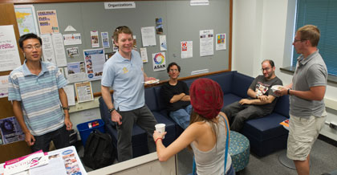

Syracuse University
Search SU web


The Office of Disability Services (ODS) provides accommodations and support services for students with a range of disabilities including: The ODS staff works with students individually to provide support services and accommodations that are necessary and appropriate.
Visiting campus for a tour, meeting or event? For information on accommodations, accessibility, safety and other issues, click here.
For the Syracuse University Access Map, click here. For the University's Access Map and Guide, click here. For information on transportation and parking, including permits, buses and directions, click here.
Syracuse University values diversity, is committed to inclusion, and seeks to provide access for all people, including those with disabilities. This website serves as a clearinghouse for information on disability and accessibility at SU. Use it to:
The Burton Blatt Institute (BBI) at Syracuse University reaches across the campus and around the globe in its efforts to advance the civic, economic, and social participation and full inclusion of people with disabilities through program development, research, and public policy guidance.
 Syracuse University has established the Disability Cultural Center (DCC) to coordinate campus-wide social, educational, and cultural activities on disability issues for students, faculty, staff, and community members with and without disabilities. Housed on campus in the Hoople Building at 805 S. Crouse Ave., the DCC sponsors programs and events, fosters connections and provides meeting space to groups such as the Beyond Compliance Coordinating Committee and the Disability Student Union.
Syracuse University strives to ensure technological access for individuals with disabilities. A variety of tools are available for faculty, staff and students. For information on what is available for students, click here. The University Library also offers assistive/adaptive technology. Faculty and staff seeking such technology for their own use should contact Dana Butler at butlerdl@syr.edu.
Syracuse University is committed to the recruitment, retention and promotion of people with disabilities.
Syracuse University is a leader in Disability Studies, scholarship, and innovative disability programs and initiatives: Center on Human Policy, Law, and Disability Studies
Beyond Compliance Coordinating Committee Chancellor's Task Force on Disability Report (PDF) 'Cuse ASL (American Sign Language) Institute on Communication and Inclusion National Alliance on Mental Illness (NAMI) at Syracuse University National Symposium on Neurodiversity at Syracuse University